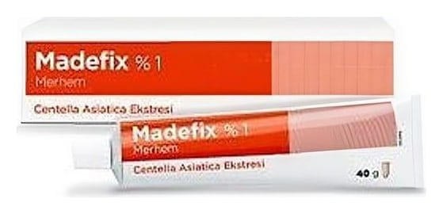

Madefix %1 Merhem, 40 g

Ne için kullanılır
KT · Bölüm 11 g merhem 10 mg Centella asiatica’nın titre edilmiş ekstresini içerir. MADEFİX 40g’ lık ambalajlarda sunulmaktadır. MADEFİX, yüzeysel 1. ve 2. derece yanıklar, bölgesel deri ülserleri, yatak yaraları, meme başı çatlak ve yarıkları, sünnet, genital bölge yırtılmaları, doğuma yardımcı olmak amacıyla uygulanan küçük cerrahi müdahalelerde, radyasyon tedavisi sonrasında oluşabilecek cilt hasarlarında iyileşme sağlanması için kullanılmaktadır.